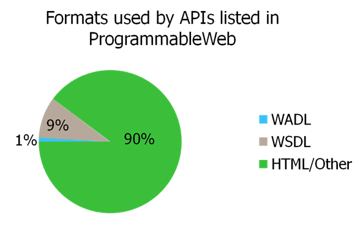
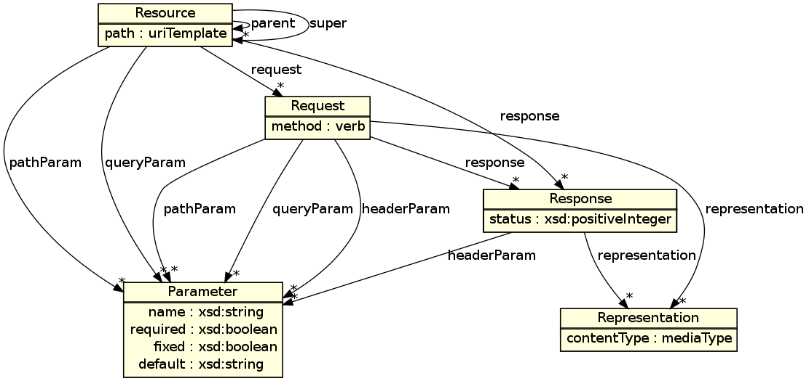
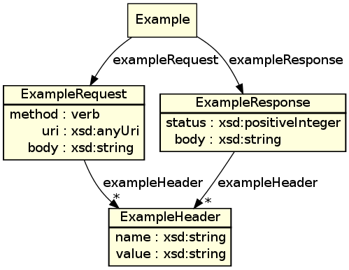
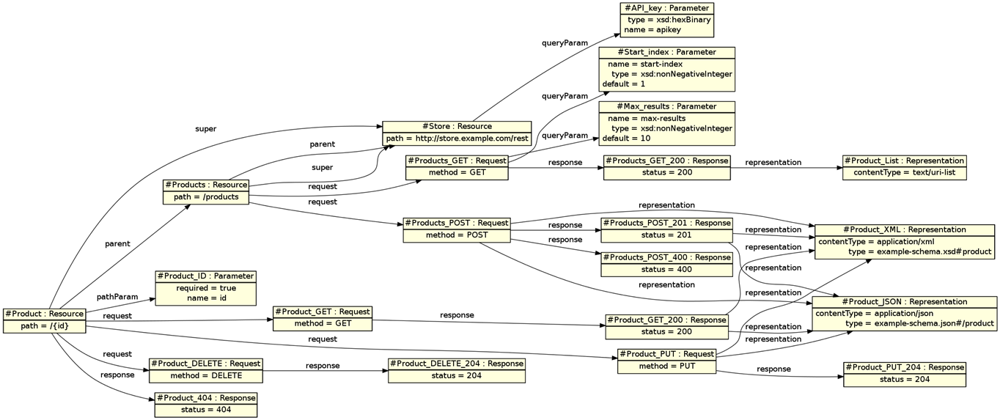
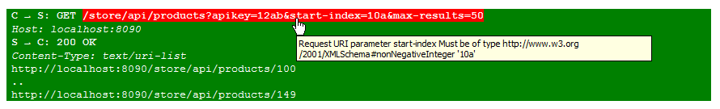
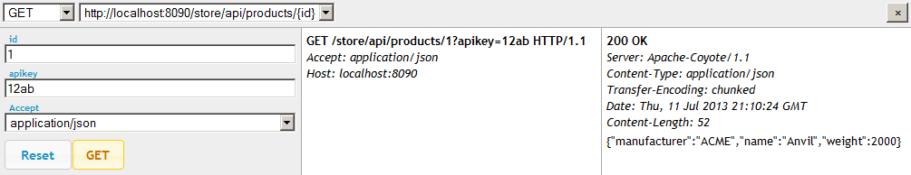

|  |
|
* M. Maleshkova, C. Pedrinaci, and J. Domingue, "Investigating web APIs on the world wide web," in Proc. European Conf. Web Services, 2010, pp. 107-114.
| Technical Writers | API Users | API Developers | Search Engines |
|---|---|---|---|
|
|
|
|
RDFa is well-suited to the way providers use HTML to document APIs today.
| Observations | Relevant RDFa Features |
|---|---|
|
|
| For APIs | For Examples |
|---|---|
|  |  |
Using WIFL requires adding RDFa to the HTML. The snippets below are taken from the store sample Grails application on GitHub. Additions for WIFL are shown like this. For an introduction to RDFa, see the Primer.
<?xml version="1.0" encoding="UTF-8"?>
<!DOCTYPE html
PUBLIC "-//W3C//DTD XHTML+RDFa 1.1//EN" "http://www.w3.org/MarkUp/DTD/xhtml-rdfa-2.dtd">
<html>
...
</html>
- The public and system identifiers are for XHTML1+RDFa1.1, as specified in HTML + RDFa 1.1.
<div prefix="wifl: http://wifl.org/spec/#" vocab="http://wifl.org/spec/#">
...
</div>
- The prefix attribute maps the prefix wifl to the vocabulary http://wifl.org/spec/#. The vocab attribute sets the default RDFa vocabulary for an element and its descendants to http://wifl.org/spec/#.
<div about="#Products" typeof="Resource"> <h3>Products Resource</h3> <p>The <span rel="parent super" resource="#Store">store's</span> container resource at the <span class="uri">${appPath}/${apiPath}<span property="path">/${productsPath}</span></span> URI supports the GET and POST methods.</p> <div rel="request" resource="#Products_GET" typeof="Request"> <p>To get a listing of all the products in the store, a client sends a <span property="method">GET</span> request to the resource. <span rel="response" resource="#Products_GET_200" typeof="Response"> The application returns an HTTP response with a status code of <span property="status">200</span> and <span rel="representation" resource="#Product_List" typeof="Representation"> a listing of all the products' URIs in the form of a <span property="contentType">text/uri-list</span></span></span>.</p> ... <p>Because the returned list could be quite long, the application offers the ability to paginate the results using the <span rel="queryParam" resource="#Start_index" typeof="Parameter"><span property="name">start-index</span></span> and <span rel="queryParam" resource="#Max_results" typeof="Parameter"><span property="name">max-results</span></span> query parameters, which are both integers <span about="#Start_index" rel="type" resource="xsd:nonNegativeInteger"></span> <span about="#Max_results" rel="type" resource="xsd:nonNegativeInteger"></span> and default to <span about="#Start_index" property="default">1</span> and <span about="#Max_results" property="default">100</span>, respectively. </div>
Declares a WIFL Resource whose URI is the concatenation of the document's URI and the about attribute. We'll use a shortened version of the URI, Products, throughout these annotations.
The default RDFa vocabulary is assumed to have been set to http://wifl.org/spec/# by an ancestor element.
Identifies the Store resource as the parent and super of Products.
Products inherits Store's URI path template and path parameters because of the parent. It inherits Store's requests, responses, query parameters and header parameters because of the super.
Sets Products URI path template property to /${productsPath}.
Its full URI path template is created by prepending that of its parent.
Declares Products' GET request.
The declaration changes the current subject to Products_GET for predicates within this div.
- Sets Products_GET's method property to GET.
Declares the 200 response to the GET request as Products_GET_200.
It becomes the current subject.
- Sets Products_GET_200's status property to 200.
Declares Product_List for the representation in the 200 response to the GET request.
It becomes the new subject.
Sets Product_List's contentType property to text/uri-list.
The last two </span>s close the Product_List and Products_GET_200 subjects, so the current subject is again Products_GET.
- The outer span declares the start-index query parameter of Products_GET. The inner span sets its name property to start-index.
- The outer span declares the max-results query parameter of Products_GET. The inner span sets its name property to max-results.
Declares the type of Start_index to be a non-negative integer.
This is an example of explicitly setting the subject of a statement with about, instead of relying on the current subject as in the previous lines. It also demonstrates WIFL's ability to use types from XML schema.
Declares the type of Max_results to be a non-negative integer.
This is another example of explicitly setting the subject of a statement with about, instead of relying on the current subject. It also demonstrates WIFL's ability to use types from XML schema.
- Declares the default value of Start_index to be 1.
- Declares the default value of Max_results to be 100.
- Closes the div from line 01.
<div class="appl exchange" typeof="Example"><span rel="exampleRequest" typeof="ExampleRequest"><span property="method">GET</span> <span property="uri">${appPath}/${apiPath}/${productsPath}?apikey=${apikeyValue}</span> <span rel="exampleHeader" typeof="ExampleHeader"><span property="name">Host</span>: <span property="value">${host}</span></span></span> <span rel="exampleResponse" typeof="ExampleResponse"><span property="status">200</span> OK <span rel="exampleHeader" typeof="ExampleHeader"><span property="name">Content-Type</span>: <span property="value">text/uri-list</span></span> <span property="body">${productsURL}/1 .. ${productsURL}/10 </span></span></div>
The div declares an anonymous subject of type Example. It is assumed that an ancestor element has set the default vocabulary to http://wifl.org/spec/#.
The outer span declares an anonymous subject of type ExampleRequest that is an exampleRequest of its containing div's Example.
The two inner spans declare the method and uri of the example request.
- Identifies the request's Host header, its name and value, and ends the ExampleRequest.
- Begins the example's response and sets its status to 200.
- Identifies the response's Content-Type header and its name and value.
- Begins the response's body.
- Ends the response's body, the response, and the example.

Find software on GitHub.
Command line tools run within node.js.
- API description validation with text, JSON, or XML output.
- RDFa graph extraction to
dotformat. 
Add the console's JavaScript to an HTML page with WIFL and the browser will:
- Visually flag invalid API examples. 
- Dynamically generate a console to explore the API. 
XSLT stylesheets to transform other formats to HTML with WIFL, including console.
Two-way processing of RFC 6570 URI templates.*
| Expand template using variable binding | Extract variable binding from full URI |
|---|---|
|
http://example.com/store/products/{id}
+
{"id": 662}
= http://example.com/store/products/662 |
http://example.com/store/products/662
-
http://example.com/store/products/{id}
= {"id": 662} |
* To implement template matching, the implementation is restricted to URI templates with no repeated variables.
Common code used by the command-line tools and the console.
- Extracts WIFL model from HTML, following links to other URIs within same domain.
- Validates example requests and responses against API description.
Have questions? Try the WIFL Google Group